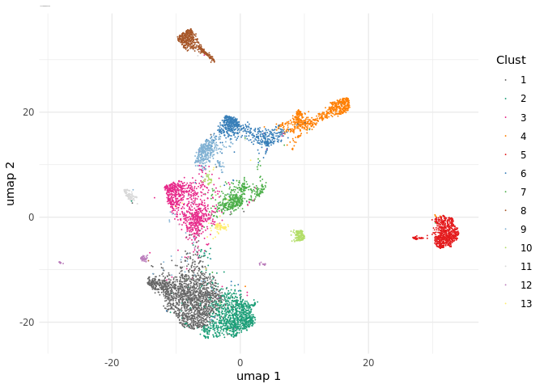

Banksy is an R package that incorporates spatial information to cluster cells in a feature space (e.g. gene expression). Spatial information is incorporated by averaging the features of the k nearest neighbours to generate new ‘neighbour’ features for a given cell. This is concatenated to the cell’s own features to generate a combined feature matrix which is used for constructing a nearest neighbour network. Leiden clustering is used to obtain spatially-informed clusters.
Installation
# Install from GitHub
remotes::install_github("jleechung/Banksy")
# Install from Bioconductor (sooon)Documentation
Banksy comes installed with documentation of main functions and their usage, along with several vignettes which detail different use cases:
Working with Banksy objects: Introduction to the BanksyObject class which serves as a container for Banksy.
Finding optimal clustering parameters: Illustrates a grid search of parameters which best cluster cells.
Analysing multiple datasets: Illustrates analysis of multiple spatial transcriptomic datasets.
Integrating Banksy with other packages: Illustrates how users can integrate Banksy with packages like Seurat and Giotto.
Basic Usage
Input data
Inputs consist of an expression matrix and cell locations. Sample data is provided with the package:
library(Banksy)
expr <- as.matrix(readRDS(system.file('/extdata/expression.rds', package = 'Banksy')))
locs <- readRDS(system.file('/extdata/locations.rds', package = 'Banksy'))The gene expression matrix for cells should be a matrix:
head(expr[,1:5])
#> cell_4 cell_5 cell_6 cell_7 cell_8
#> Slc1a2 4 2 13 26 6
#> Scn4b 3 6 17 0 1
#> Itpr1 3 0 15 2 3
#> Slc25a23 3 0 5 3 1
#> Slc1a3 1 1 0 31 2
#> Nfib 1 1 1 4 0while cell locations should be supplied as a data.frame:
head(locs)
#> sdimx sdimy
#> cell_4 68.49701 13951.186
#> cell_5 73.80242 18085.385
#> cell_6 119.55364 3143.897
#> cell_7 105.25295 2191.132
#> cell_8 96.64224 4806.681
#> cell_9 110.59598 14124.008Spatial clustering
First, create a BanksyObject with the expression matrix and cell locations.
bank <- BanksyObject(own.expr = expr,
cell.locs = locs)Next, normalize the expression matrix, compute the neighbour matrix, and scale the resulting gene-cell and neighbour feature-cell matrix.
bank <- NormalizeBanksy(bank, normFactor = 100)
bank <- ComputeBanksy(bank)
#> Computing Banksy matrices...
#> Spatial mode is kNN_r, k_geom = 10
#> Banksy matrix: 27.77 sec elapsed
bank <- ScaleBanksy(bank)At this point, the joint expression matrix (gene-cell matrix and neighbour feature-cell matrix) can be extracted with getBanksyMatrix, which returns the joint matrix and cell locations:
joint <- getBanksyMatrix(bank, lambda = 0.25)
joint$expr[1:5,1:5]
#> cell_4 cell_5 cell_6 cell_7 cell_8
#> Slc1a2 0.41040297 -0.36165667 -0.4364615 0.8607711 0.3392922
#> Scn4b 0.85950683 2.02739671 0.2884143 -0.7755390 -0.4313188
#> Itpr1 0.77398900 -1.00281439 0.0173598 -0.7598327 0.1193772
#> Slc25a23 2.51032763 -1.15087647 -0.4501676 -0.3998602 -0.3800967
#> Slc1a3 0.07620877 -0.01765429 -0.5808326 3.5972767 0.2491144
joint$locs[1:5,]
#> sdimx sdimy
#> cell_4 68.49701 13951.186
#> cell_5 73.80242 18085.385
#> cell_6 119.55364 3143.897
#> cell_7 105.25295 2191.132
#> cell_8 96.64224 4806.681Next, we obtain cluster assignments for the following parameters:
-
lambda. A mixing parameter from 0 to 1 which determines how much spatial information is incorporated.
-
resolution. Leiden clustering resolution.
-
kneighbours. Number of k neighbours to use for constructing sNN.
set.seed(1234)
bank <- ClusterBanksy(bank, lambda = 0.5,
resolution = 0.8,
kneighbours = 40)
#> Iteration 1 out of 1
#> Finished clustering for Lambda=0.5, Resolution=0.8, K Neighbours=40
#> 27.09 sec elapsedVisualization
UMAP visualization:
plotUMAP(bank, params = 'res0.8_lam0.5_k40', pt.size = 0.02, main.size = 10)
Spatial plot:
plotSpatialDims(bank, params = 'res0.8_lam0.5_k40', pt.size = 0.8, main.size = 10)
Subsetting
The BanksyObject can be subset by cells, features or metadata columns.
bankSubset1 <- SubsetBanksy(bank,
dimx = sdimx > 1000 & sdimx < 4000,
dimy = sdimy > 2000 & sdimy < 3000,
cells = c(cell_364, cell_367, cell_384,cell_389),
features = sample(rownames(own.expr(bank)), 10))
#> Before filtering: 6725 cells and 140 genes.
#> After filtering: 4 cells and 10 genes.
#> Filtered 6721 cells and 130 genes.
head(bankSubset1)
#> own expression:
#> cell_364 cell_367 cell_384 cell_389
#> Cacna1d -0.4665858 -0.4665858 -0.4665858 -0.4665858
#> Smad3 -0.6349799 -0.6349799 -0.6349799 1.2142839
#> Tsc22d1 -0.6742251 -0.6742251 0.6137452 -0.6742251
#> Traf1 -0.3479753 -0.3479753 -0.3479753 -0.3479753
#> Adamts2 -0.4211489 -0.4211489 -0.4211489 -0.4211489
#>
#> neighbour expression:
#> cell_364 cell_367 cell_384 cell_389
#> Cacna1d.nbr -0.4170890 -0.3539951 -0.6708647 -0.9097485
#> Smad3.nbr 0.8297271 0.5464924 0.1457932 0.4353906
#> Tsc22d1.nbr -0.3273127 -0.3267730 -0.2396807 0.4324479
#> Traf1.nbr -0.3782101 -0.4923421 0.4701541 1.1875814
#> Adamts2.nbr -0.4919150 -0.6060863 -0.2951297 -0.2370119
#>
#> cell locations:
#> sdimx sdimy
#> cell_364 1019.050 2660.030
#> cell_367 1040.727 2585.758
#> cell_384 1082.720 2383.199
#> cell_389 1084.240 2254.025
#>
#> metadata:
#> cell_ID n_features res0.8_lam0.5_k40
#> cell_364 cell_364 25 1
#> cell_367 cell_367 35 2
#> cell_384 cell_384 99 3
#> cell_389 cell_389 60 3
bankSubset2 <- SubsetBanksy(bank,
metadata = res0.8_lam0.5_k40 %in% c(3,6))
#> Before filtering: 6725 cells and 140 genes.
#> After filtering: 1452 cells and 140 genes.
#> Filtered 5273 cells and 0 genes.
plotSpatialDims(bankSubset2, params = 'res0.8_lam0.5_k40',
pt.size = 0.5, main.size = 10)
Session information
sessionInfo()
#> R version 4.0.3 (2020-10-10)
#> Platform: x86_64-w64-mingw32/x64 (64-bit)
#> Running under: Windows 10 x64 (build 19041)
#>
#> Matrix products: default
#>
#> locale:
#> [1] LC_COLLATE=English_Singapore.1252 LC_CTYPE=English_Singapore.1252
#> [3] LC_MONETARY=English_Singapore.1252 LC_NUMERIC=C
#> [5] LC_TIME=English_Singapore.1252
#>
#> attached base packages:
#> [1] stats graphics grDevices utils datasets methods base
#>
#> other attached packages:
#> [1] Banksy_0.99.0
#>
#> loaded via a namespace (and not attached):
#> [1] RcppEigen_0.3.3.9.1 tidyselect_1.1.1 xfun_0.23
#> [4] purrr_0.3.4 lattice_0.20-41 colorspace_2.0-0
#> [7] vctrs_0.3.8 generics_0.1.0 htmltools_0.5.1.1
#> [10] sccore_0.1.3 yaml_2.2.1 utf8_1.2.1
#> [13] rlang_0.4.11 pillar_1.6.1 glue_1.4.2
#> [16] DBI_1.1.1 uwot_0.1.10 pals_1.7
#> [19] plyr_1.8.6 lifecycle_1.0.0 stringr_1.4.0
#> [22] tictoc_1.0.1 munsell_0.5.0 Matrix.utils_0.9.8
#> [25] gtable_0.3.0 mapproj_1.2.7 codetools_0.2-16
#> [28] evaluate_0.14 labeling_0.4.2 knitr_1.33
#> [31] RcppArmadillo_0.10.5.0.0 irlba_2.3.3 parallel_4.0.3
#> [34] fansi_0.5.0 leidenAlg_0.1.1 highr_0.9
#> [37] Rcpp_1.0.5 scales_1.1.1 dbscan_1.1-8
#> [40] grr_0.9.5 farver_2.0.3 RSpectra_0.16-0
#> [43] ggplot2_3.3.3 digest_0.6.27 stringi_1.5.3
#> [46] dplyr_1.0.6 collapse_1.5.3 grid_4.0.3
#> [49] tools_4.0.3 RcppAnnoy_0.0.18 magrittr_2.0.1
#> [52] maps_3.3.0 tibble_3.1.2 dichromat_2.0-0
#> [55] crayon_1.4.1 pkgconfig_2.0.3 ellipsis_0.3.2
#> [58] Matrix_1.3-4 data.table_1.13.6 assertthat_0.2.1
#> [61] rmarkdown_2.8 R6_2.5.0 igraph_1.2.6
#> [64] compiler_4.0.3